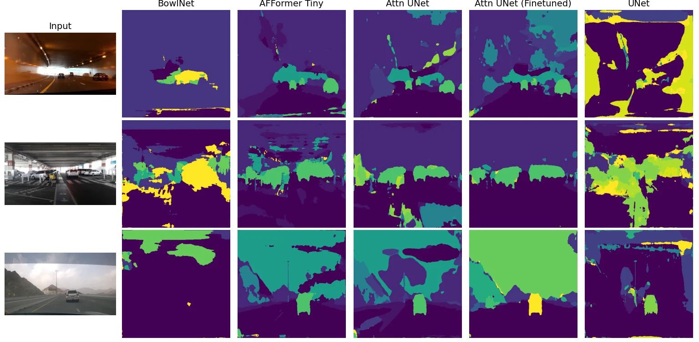

Pixel-level understanding of city streets, for devices that can't afford a big network. A model with under 3M parameters beat models up to 13× its size.

Self-driving and mobile vision need segmentation that runs on the device, not in a data centre.
I benchmarked heavy and ultra-light architectures side by side and showed that a small transformer can win on both accuracy and size.
More parameters did not buy more accuracy. The smallest serious contender came out on top.